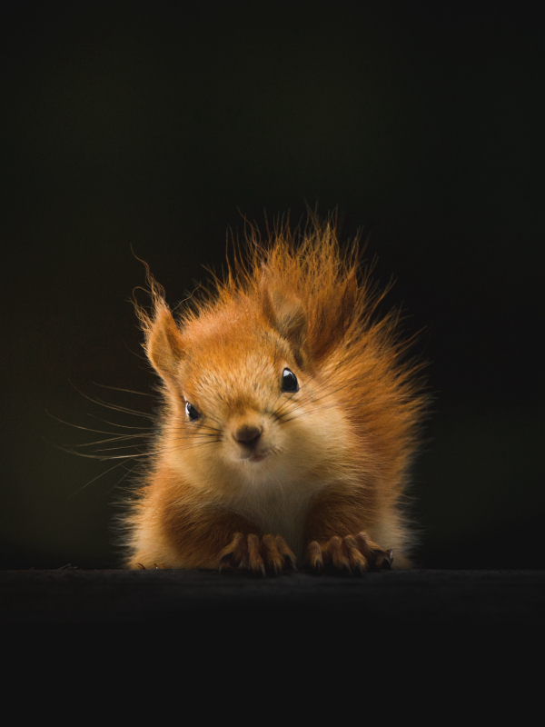

Animais Fantásticos
-

-

-

-

-

-


As raposas são animais mamíferos e onívoros pertencentes à família Canidae. São vulpídeos de porte médio, caracterizados por um focinho comprido e uma cauda longa e peluda.
Também apresentam como particularidade suas pupilas ovais, semelhantes às pupilas verticais dos felídeos.
Os esquilos são mamíferos roedores pertencentes à família Sciuridae. São animais de pequeno a médio porte, caracterizados por dentes incisivos de crescimento contínuo e uma cauda geralmente felpuda, que auxilia no equilíbrio e na comunicação.
Também apresentam como particularidade patas traseiras extremamente flexíveis, que permitem que desçam de árvores de cabeça para baixo, rotacionando suas articulações em até 180°.
Os ursos são mamíferos carnívoros (embora a maioria seja onívora na prática) pertencentes à família Ursidae. São animais de grande porte, caracterizados por corpos robustos, pernas curtas e grossas, e um focinho alongado com excelente olfato.
Apresentam como particularidade a locomoção plantígrada, o que significa que caminham depositando o peso sobre as solas dos pés e mãos, de forma semelhante aos seres humanos, o que lhes confere grande estabilidade para se erguerem sobre duas patas.
Os lobos são mamíferos carnívoros pertencentes à família Canidae, sendo os maiores membros selvagens desta linhagem. São caracterizados por uma estrutura social complexa, focinho largo e orelhas triangulares eretas.
Apresentam como particularidade uma resistência física superior para perseguições de longa distância, além de uma dentição especializada para prender e cortar, exercendo uma pressão de mordida significativamente maior que a da maioria dos cães domésticos.
Os macacos são mamíferos primatas pertencentes às subordens Platyrrhini (Novo Mundo) ou Catarrhini (Velho Mundo). São caracterizados por cérebros altamente desenvolvidos em relação ao corpo e mãos com polegares opositores.
Apresentam como particularidade, em diversas espécies, a presença de uma cauda preênsil que funciona como um quinto membro, além de uma visão estereoscópica (em 3D) altamente apurada, essencial para o deslocamento entre as copas das árvores.
Os leões são mamíferos carnívoros pertencentes à família Felidae e ao gênero Panthera. São animais de grande porte, caracterizados por corpos musculosos, garras retráteis e uma estrutura social única entre os felinos, vivendo em grupos (alcateias).
Apresentam como particularidade um acentuado dimorfismo sexual, onde os machos exibem uma juba densa que serve tanto para proteção do pescoço em combates quanto como indicador de saúde e vigor para as fêmeas.